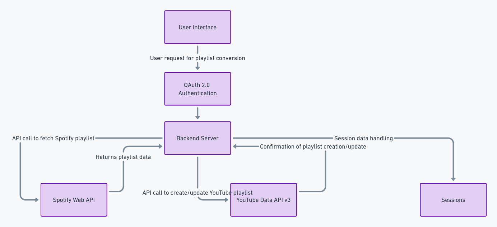

About Me
Hi, I'm Andrii, a first year student of ICT at Thomas More Mechelen-Antwerp, Campus De Nayer. I am developing a tool to convert Spotify playlists to YouTube playlists using modern web APIs.

Software Architecture
Here's how our application integrates Spotify and YouTube APIs to manage your music playlists across platforms.
Biggest problems in my project so far were setting up OAuth 2.0 for Spotify and Youtube and making the request to Youtube API
